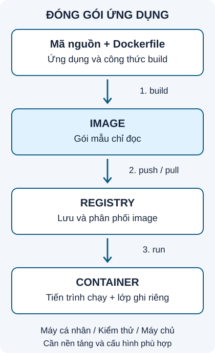

1. Mục tiêu
Phân biệt Dockerfile, image, container và máy ảo; hiểu lợi ích và giới hạn của Docker; tự build rồi chạy một trang web nhỏ.
2. Vấn đề thực tế
“Trên máy tôi chạy được!” Bạn gửi ứng dụng nhưng máy bạn học thiếu dependency (thư viện phụ thuộc), dùng runtime (môi trường thực thi) khác phiên bản hoặc thiếu cấu hình. Chỉ gửi mã nguồn chưa đủ để tái tạo môi trường chạy.
Docker giúp đóng gói ứng dụng cùng các tệp cần thiết thành image. Người nhận dùng image để tạo container chạy ứng dụng, giảm việc cài đặt thủ công giữa máy phát triển, môi trường kiểm thử và máy chủ.
3. Kiến thức nền
Dockerfile: công thức
Tệp mô tả cách chọn nền, chép mã nguồn và cấu hình để build image.
Image: gói mẫu
Gói chỉ đọc chứa tệp và cấu hình để tạo container. Registry là nơi lưu và phân phối image.
Container: thực thể chạy
Được tạo từ image, có tiến trình và lớp ghi riêng. Container có thể đang chạy hoặc đã dừng.

Container khác máy ảo (Virtual Machine, VM) thế nào?
- VM
- Có hệ điều hành khách và kernel riêng, chạy trên lớp ảo hóa.
- Linux container
- Là tiến trình hoặc nhóm tiến trình cô lập, dùng chung kernel Linux của môi trường chạy container. Thường có ít chi phí tài nguyên hơn VM có hệ điều hành đầy đủ.
Docker giúp chia sẻ môi trường ứng dụng, giảm xung đột thư viện và phân phối ứng dụng lên máy chủ/cloud tương thích. Bạn vẫn phải cấu hình mạng, lưu trữ và bảo mật. Các chủ đề đó sẽ có bài riêng.
4. Thực hành: đóng gói một trang web
Chuẩn bị: Docker Engine hoặc Docker Desktop đã chạy, chế độ Linux containers. Ví dụ dùng Docker CLI, cú pháp Dockerfile cơ bản và Nginx 1.28. Tag là mốc của bài tập; kiểm tra image Nginx chính thức trước khi sử dụng lâu dài. Lần đầu cần mạng để tải image.
Tạo thư mục thực hành riêng ngoài repo Synaptrail, gồm đúng hai tệp bên dưới. Mở terminal tại thư mục đó.
Tệp index.html
<!doctype html>
<html lang="vi">
<meta charset="utf-8">
<title>Docker đầu tiên</title>
<h1>Xin chào từ container!</h1>
</html>Dòng 1 chọn HTML hiện đại; dòng 2 khai báo tiếng Việt; dòng 3 dùng UTF-8 để hiển thị dấu; dòng 4 đặt tiêu đề tab; dòng 5 là lời chào trên trang; dòng 6 kết thúc tài liệu.
Tệp Dockerfile — không có đuôi mở rộng
FROM nginx:1.28-alpine
COPY index.html /usr/share/nginx/html/index.htmlFROMchọn image nền đã có Nginx.COPYchép trang HTML vào thư mục phục vụ web. Ví dụ kế thừa lệnh khởi động của image nền nên chưa cần tự viết CMD.
Build và run — PowerShell hoặc Bash
Chạy lần lượt. Tên container và cổng 8080 cần chưa được sử dụng.
docker version
docker build -t synaptrail-web:1.0 .
docker run -d --name synaptrail-demo -p 127.0.0.1:8080:80 synaptrail-web:1.0
docker psversionkiểm tra CLI và engine; cần thấy cả Client lẫn Server.buildtạo image;-tđặt tên và tag. Dấu chấm chọn thư mục hiện tại làm build context (tập tệp đầu vào).runtạo rồi khởi động container;-dchạy nền;--nameđặt tên.-p 127.0.0.1:8080:80ánh xạ cổng 8080 trên địa chỉ loopback của máy bạn tới cổng 80 trong container.pshiển thị container đang chạy; tìm tênsynaptrail-demo.
Mở http://127.0.0.1:8080. Kết quả mong đợi: Xin chào từ container!
Quan sát, dừng và dọn container thực hành
docker logs synaptrail-demo
docker stop synaptrail-demo
docker ps -a
docker start synaptrail-demo
docker stop synaptrail-demo
docker rm synaptrail-demologsxem đầu ra, hữu ích để chẩn đoán.stopdừng, chưa xóa container.ps -ahiển thị cả container đã dừng.startchạy lại container đó; thử mở lại trang.- Dừng trước khi xóa.
rmxóa container thực hành đã dừng. Image vẫn còn để tạo container khác.
5. Lỗi thường gặp
- Không kết nối daemon: kiểm tra Docker Desktop/Engine đã chạy và phần Server trong docker version.
- Thiếu Dockerfile/index.html: kiểm tra thư mục terminal và đuôi .txt bị ẩn trên Windows.
- Cổng bận: đổi 8080 thành 8081 rồi truy cập cổng mới; giữ cổng container 80.
- Trùng tên: xem docker ps -a; dùng start cho container cũ hoặc đặt tên mới khi run.
- Sửa HTML chưa thấy đổi: COPY chạy lúc build. Build tag mới và tạo container mới để nhận nội dung mới.
6. Bài tập ba mức
Cơ bản
Chạy ví dụ và ghi tên image, container, cổng host và cổng container.
Gợi ý
Image synaptrail-web:1.0; container synaptrail-demo; cổng host 8080; cổng container 80.
Vận dụng
Trước khi dọn ví dụ, tạo container thứ hai từ cùng image, tên khác, cổng host 8081. Kiểm tra cả hai trang rồi dừng và xóa đúng hai container thực hành.
Gợi ý
Dùng lại docker run, đổi tên thành synaptrail-demo-2 và ánh xạ thành 127.0.0.1:8081:80; không cần build lại.
Nâng cao
Đổi lời chào, build tag 1.1 và chạy container mới. Giải thích vì sao container tạo từ tag 1.0 vẫn phục vụ nội dung cũ.
Gợi ý
Sửa tệp trên máy không tự thay đổi tệp đã COPY vào image. Container cũ vẫn dùng image cũ.
7. Tóm tắt
Dockerfile mô tả cách build; image là gói mẫu; container là thực thể được tạo từ image. Docker giảm sai lệch môi trường ứng dụng trên nền tảng tương thích. Dừng container có thể chạy lại; xóa container không đồng nghĩa xóa image.
8. Quiz tự kiểm tra
Tự trả lời trước khi mở đáp án. Các câu đều dựa trên nội dung bài.
1. Dockerfile, image và container liên hệ thế nào?
Build dựa trên Dockerfile tạo image; run tạo và khởi động container từ image.
2. Linux container có kernel riêng như VM không?
Không. Chúng dùng chung kernel của môi trường Linux chạy container.
3. Trong 127.0.0.1:8080:80, trình duyệt host dùng cổng nào?
Cổng 8080, được ánh xạ tới cổng 80 của container.
4. docker stop có xóa container không?
Không. Có thể dùng start để chạy lại. rm xóa container đã dừng trong ví dụ.
5. Sửa HTML trên máy có tự đổi image đã build không?
Không. Cần build mới và tạo container từ image mới để thấy thay đổi.
Tài liệu đối chiếu
Biên soạn từ ảnh bạn cung cấp và đối chiếu ngày 18/10/2026: Docker overview, Container và VM, Port publishing.